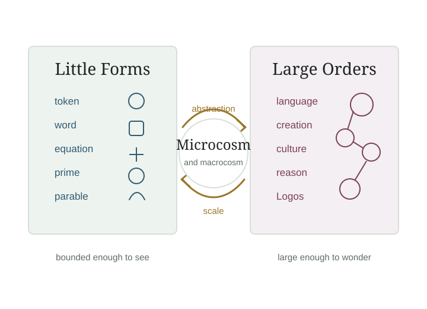

Build Little Worlds
Theology of LLMs
A Little World for Large Language Models
Large language models are often discussed through fear. This project begins with wonder.
If Christians can marvel at the mathematical order of the natural world, we can also marvel at the mathematical order discovered in language.

Start here
Begin with the central argument: large language models reveal that human language is more mathematically ordered than we knew. That discovery should deepen, not threaten, a Christian account of creation as intelligible through the Logos.
Why Build Little Worlds?
The domain name describes the method. This site builds a small theological world around large language models: a world made from essays, diagrams, definitions, sources, metaphors, and technical explanations.
LLMs themselves also work inside little worlds of language. A prompt creates a small symbolic environment: a role, a task, a tone, a genre, a set of constraints, and a pattern to continue. The model navigates that local world mathematically.
The Beauty of the Language Machine
A growing series on probability, embeddings, attention, scale, and the Logos.
Latest posts
All postsLoading posts...